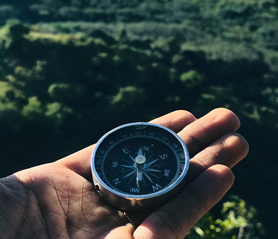

Популярные направления
Когда Горный Алтай называют второй Швейцарией, алтайцы отвечают, что нужно еще
разобраться,
кто тут второй. Чтобы расставить все по местам, отправляйтесь в путешествие по
Чуйскому тракту,
по Горному Алтаю до самой Монголии. 962 км — полный
маршрут Новосибирск—Новоалтайск—Бийск—Майма — государственная граница с Монголией.
